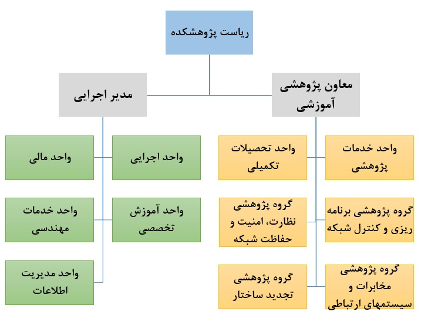

Proposed Institute structure

Institute Council
The Council comprises the Director, deputy directors and heads of the research groups. It defines, develops and approves regulations and working procedures for the Institute's different divisions.
Executive Unit
This unit supervises compliance with the Institute's approved regulations and manages non-faculty personnel and workshop and laboratory equipment. Its main responsibilities are:
- Supervising the implementation of research, technology, administrative and financial instructions, regulations and rules.
- Handling personnel matters including assignments, leave and overtime.
- Assessing, forecasting and reporting the Institute's staffing, financial and equipment needs.
- Reviewing and following up purchase orders for laboratory and workshop equipment.
Finance Unit
The Finance Unit follows up amounts owed by contracting companies and the University's research vice-presidency, and handles settlement, insurance and related matters. Its main responsibilities are:
- Following up payments for technology and engineering-service projects from contracting organisations and industries.
- Following up payments for research-project contracts from contracting organisations and industries.
- Following up the Institute's share of research and engineering-service project revenue with the University's research vice-presidency.
- Handling project financial administration within the Institute.
- Submitting financial reports to the Institute Council.
Specialist Training Unit
The Specialist Training Unit develops, defines and follows up the approval and delivery of short courses and a comprehensive training system for Ministry of Energy personnel, in response to national needs. Its main responsibilities are:
- Defining and obtaining approval for short technician, engineering and specialist courses in line with the needs of electricity-industry companies.
- Delivering short and long courses in cooperation with the University's specialist training centre and other educational centres.
Engineering Services Unit
Drawing on the workshops and laboratories at Shahid Beheshti University's Shahid Abbaspour Campus and extensive engineering-service experience, this unit presents the University's capabilities to relevant companies and departments and delivers technical and engineering services needed by contractors and other companies. Its main responsibilities are:
- Defining and delivering industry-commissioned technology projects involving technology transfer, reverse engineering or engineering services.
- Concluding and exchanging research and engineering-service contracts with organisations and industries seeking cooperation with the University.
- Maintaining ongoing contact with different industry sectors and technical and engineering departments.
- Presenting the Institute's research and engineering-service capabilities.
Information Management Unit
The Information Management Unit maintains and updates information on reviewers, researchers, projects, training courses and related activities. Its main responsibilities are:
- Reviewing and updating required regulations, forms and instructions.
- Creating and updating a database of approved, ongoing and completed projects.
- Creating and updating an electronic project-report database with title and full-text search.
- Defining and supervising projects to create, improve and update the web-based information site.
- Defining and supervising projects to create and improve web-based information exchange among scientific-committee members, project managers, project implementers and others.
- Preparing monthly and annual reports on project definition and delivery and on the performance of managers, supervisors and others.
Research Services Unit
The Research Services Unit identifies prospective client companies, schedules initial client meetings, handles administration related to selecting project implementers, and follows up project definition and approval. Its main responsibilities are:
- Creating a database of companies and centres seeking research projects.
- Handling proposal preparation, client meetings and the project-approval process.
- Reporting on the progress of contract conclusion.
Postgraduate Studies Unit
The Postgraduate Studies Unit develops, defines and follows up approval and delivery of long-term master's and doctoral programmes within higher-education regulations and in line with national needs. Its main responsibilities are:
- Defining and obtaining approval for long-term master's and doctoral programmes to meet electricity-industry needs.
- Defining and delivering research-based doctoral programmes.
- Delivering long-term daytime and evening master's and doctoral programmes.
Network Planning and Control Research Group
Through three research laboratories—Network Planning and Expansion Studies, Network Operation and Automation Studies, and Management and Economics in Electrical Networks—this group covers network-expansion planning, network operation and the management of electrical networks.
Network Monitoring, Security and Protection Research Group
Through three research laboratories—Network Security and Reliability Studies, Network Supervision and Monitoring Studies, and Network Protection Studies—this group covers electrical-network security and protection and improved network observability.
Telecommunications and Communication Systems Research Group
Through three research laboratories—Telecommunications Infrastructure and Implementation Studies, Modern Measurement and Data-Transmission Systems Studies, and Telecommunications Systems Security Studies—this group investigates communications for network monitoring and data transmission to control centres for analysis and assessment of current conditions.
Restructuring Research Group
Through three research laboratories—Electricity Industry Restructuring Studies, Electricity Market Studies, and Distribution Company Regulations in a Restructured Environment—this group covers studies of restructuring the country's electrical network.